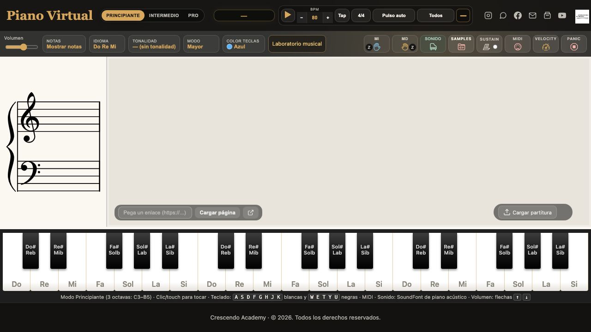
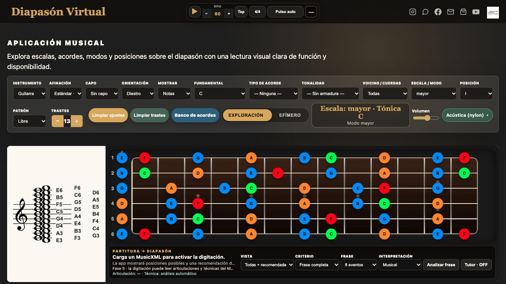

Primero, el oído
Escuchamos un fragmento, seguimos su pulso y reconocemos lo que cambia en la melodía o el acompañamiento.
Escuela de música online
Instrumentos, solfeo, armonía y producción musical. Clases en vivo por Zoom para todas las edades y niveles, con herramientas propias para seguir practicando y cursos grabados para aprender a tu ritmo.
Del primer sonido a una decisión musical propia.
Sobre nosotros
En Crescendo Academy entendemos la música como una práctica viva. Acompañamos el aprendizaje desde la escucha y la lectura hasta el instrumento y la creación, conectando cada explicación con algo que se pueda oír y tocar.
Las clases, los recorridos de estudio y las herramientas digitales se complementan para que cada estudiante pueda practicar, reconocer sus avances y seguir explorando a su ritmo.
Conversemos sobre tu recorrido ↗Clases de música online para todas las edades. Elige tu instrumento y consulta por una clase demostrativa.
Una idea, varias formas de vivirla
La teoría tiene sentido cuando ayuda a reconocer lo que sucede en una canción, resolver una dificultad y expresar una idea. Por eso el estudio se conecta con ejercicios, instrumentos y repertorio.
Escuchamos un fragmento, seguimos su pulso y reconocemos lo que cambia en la melodía o el acompañamiento.
Relacionamos lo que oímos con la lectura y la teoría: una figura, un intervalo o un acorde adquieren sentido en la música.
Probamos la idea en el instrumento y en el repertorio. Escuchamos el resultado y definimos qué practicar después.
Clases y aprendizaje
Cuéntanos tu experiencia y lo que quieres conseguir. Te orientamos para conectar tu instrumento con la lectura, el oído y la creación musical.
Aprende desde cero o desarrolla tu técnica y repertorio con acompañamiento docente.
Conecta la lectura, el ritmo y el oído con los acordes y las relaciones que dan sentido a la música.
Desarrolla tu criterio de escucha y aprende a trabajar el sonido con las herramientas de producción.
Para todas las edades y niveles · Clases en vivo por Zoom
Agenda tu clase demostrativa gratis →Entre una clase y otra
Consulta qué trabajar, vuelve a tus materiales y lleva tus dudas al siguiente encuentro. Mi Crescendo organiza el trabajo entre clases.
El portal reúne clases, tareas, repertorio, objetivos y recursos asignados. El alumno puede consultar su trabajo y el docente mantener un seguimiento ordenado.
Conoce Mi Crescendo ↗Un ejemplo de cómo organizar lo trabajado en clase; no corresponde a un alumno real.
Herramientas para explorar
Instrumentos y ejercicios interactivos que acompañan el estudio: sirven para probar posiciones, escuchar relaciones y practicar con más claridad.

Conecta lo que lees en el pentagrama con lo que escuchas y tocas.

Explora posiciones, intervalos y digitaciones de forma visual.
Piano, diapasón, bajo, cuerdas, metrónomo, entrenamiento auditivo, teoría, armonía y editor de partituras.
Modalidad
Las clases se realizan en vivo por Zoom, con horarios flexibles y orientación según tu edad, nivel y objetivos. También puedes estudiar con nuestro curso grabado de requinto y nuestro libro propio.
Escríbenos para conocer disponibilidad, duración, frecuencia y precios de las clases.
Consulta por las clases ↗Curso y libro de requinto ↓
Material propio de Crescendo
Además de las clases en vivo, contamos con un curso grabado y un libro propio para estudiar requinto. Consulta sus contenidos y condiciones en Hotmart.
Una opción para estudiar con lecciones grabadas y volver a los contenidos durante tu práctica.
Ver curso en Hotmart ↗Conoce nuestro libro de requinto y consulta cómo incorporarlo a tu aprendizaje.
Consultar libro en Hotmart ↗Antes de empezar
Lo esencial sobre las clases y los recursos de Crescendo.
Somos una escuela de música online. Las clases en vivo se realizan por Zoom y puedes utilizar las herramientas digitales desde donde estés.
Tenemos opciones para todas las edades y niveles. Puedes comenzar desde cero o continuar tu formación; cuéntanos tu experiencia para orientarte.
Sí. Las herramientas públicas funcionan desde el navegador. Algunas funciones, como tocar o usar el micrófono, pueden pedir permiso al dispositivo.
Es el espacio de seguimiento de clases, tareas, repertorio, objetivos y recursos. El acceso al portal del alumno utiliza un código personal.
Escríbenos para conversar sobre tu instrumento, experiencia y objetivos. Así podremos indicarte las opciones disponibles sin asumir un plan único para todos.
Un dispositivo con cámara y micrófono, conexión a internet y un espacio donde puedas escuchar y tocar. Si estudias instrumento, consulta qué necesitas antes de comenzar. Para producción musical, te orientamos sobre el equipo y software según tus objetivos.
Escríbenos para consultar duración, frecuencia, disponibilidad y precios según el área que deseas estudiar. Acordamos estos detalles antes de comenzar.
Sí. Contamos con un curso grabado de requinto y un libro propio. Puedes conocerlos en Hotmart.
El siguiente paso
Empieza con una conversación: te ayudamos a encontrar una opción para tu instrumento, nivel y objetivos.
Elige un instrumento o materia y comparte tu experiencia y lo que quieres aprender.
Agenda una clase demostrativa gratis y acuerda horarios, modalidad y condiciones.
Comienza tus clases y conecta lo aprendido con la práctica entre encuentros.